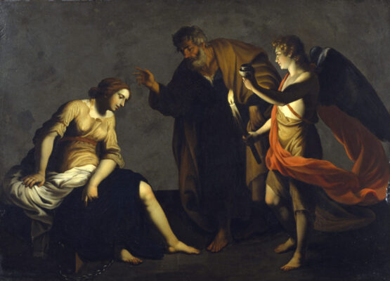
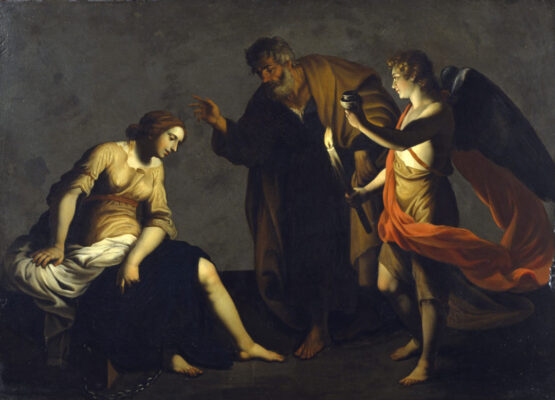

El Renacimiento fue un movimiento cultural, artístico y científico que tuvo lugar en Europa entre los siglos XIV y XVII.
Se caracterizó por un gran interés en la antigüedad clásica, la razón y la naturaleza, y por el humanismo, una corriente
que ponía al ser humano en el centro de todas las cosas.
Durante el Renacimiento se produjeron importantes avances en áreas como la literatura, la filosofía, la pintura, la
escultura, la arquitectura, la música y la ciencia. Artistas y pensadores de la época buscaron recuperar y mejorar las
técnicas y conocimientos de la antigüedad, y desarrollaron nuevas formas de expresión que se alejaban del estilo gótico
medieval.

Entre los artistas más destacados del Renacimiento se encuentran Leonardo da Vinci, Miguel Ángel, Rafael, Botticelli, Tiziano, Jan van Eyck y Albrecht Dürer. En cuanto a la literatura, destacaron autores como William Shakespeare, Miguel de Cervantes, Dante Alighieri y Francesco Petrarca.
El Renacimiento también se caracterizó por la exploración geográfica y la expansión comercial, que permitió el intercambio de ideas y productos entre diferentes países y culturas. En el ámbito científico, se produjeron importantes avances en áreas como la astronomía, la anatomía, la física y las matemáticas, gracias a figuras como Galileo Galilei y Nicolás Copérnico.
 

PRUEBA A DESLIZAR LA IMAGEN
El Renacimiento es considerado como un momento clave en la historia de la humanidad, ya que sentó las bases para la
modernidad y la emancipación del pensamiento crítico, la razón y la libertad individual.
El Renacimiento también fue un período de gran transformación social y político. La idea del humanismo y la creencia en
la capacidad del ser humano para alcanzar la excelencia y la perfección, impulsó el surgimiento de una nueva clase de
individuos: los humanistas. Estos eran intelectuales que creían en la importancia de la educación y la investigación, y
que buscaban la comprensión y la mejora del mundo.
Además, el Renacimiento tuvo un impacto significativo en la religión. La Reforma Protestante, liderada por Martin Lutero
y otros reformadores, surgió como una respuesta a la corrupción y la decadencia de la Iglesia Católica, y propuso una
nueva forma de cristianismo basada en la interpretación personal de la Biblia y la fe individual.
Otro aspecto importante del Renacimiento fue la creación de una nueva estética. La belleza clásica y la perfección del
cuerpo humano fueron consideradas como ideales artísticos, lo que llevó a la creación de una nueva forma de
representación de la figura humana en la pintura y la escultura.
En resumen, el Renacimiento fue un período de gran efervescencia intelectual, artística y científica que marcó un hito
en la historia de la humanidad. Sus legados incluyen el humanismo, la creación de una nueva estética, el surgimiento de
la Reforma Protestante, el desarrollo de la ciencia empírica y la difusión masiva del conocimiento.